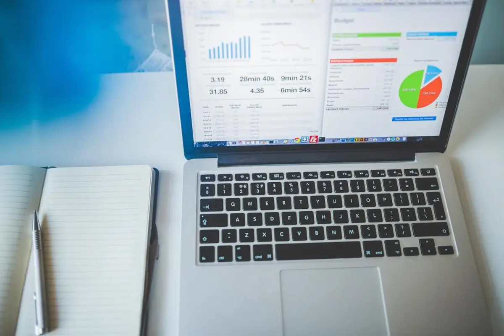
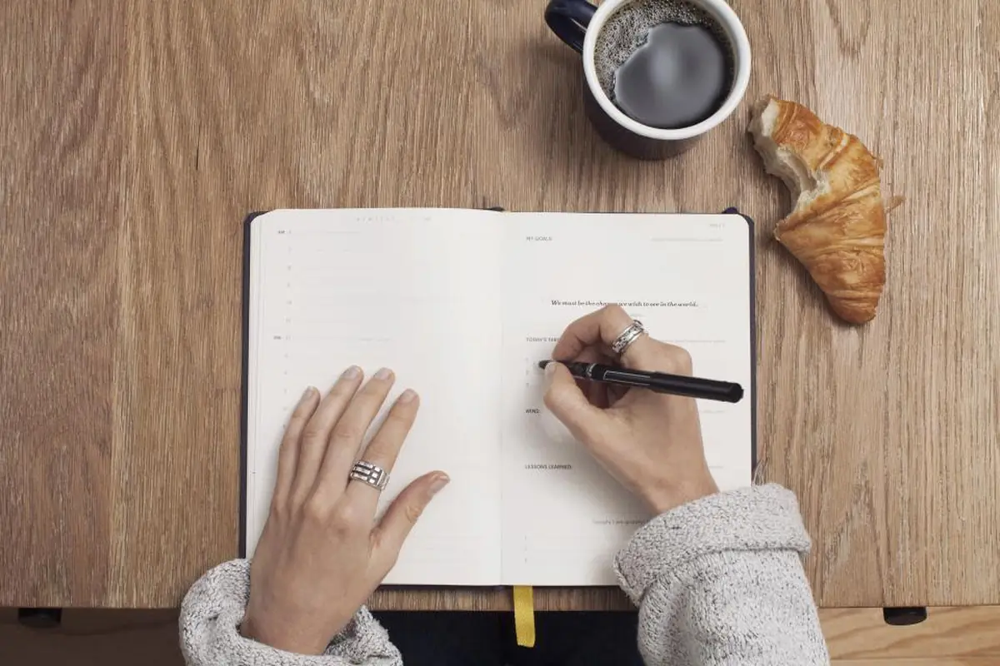

Running usability tests in Bangla, without a lab
A phone, a quiet café and a script that works in two languages.
I'm Maliha, a product designer at Ranga Pay. For two years I have been turning messy money tasks into flows that merchants actually finish.
Open to senior product design roles from February 2027
Three projects from the last two years, each with the problem, my part in it and what changed after launch.

No. 1Ranga Pay · Fintech · 2025
Small shop owners were dropping off while uploading trade licences and bank details. I mapped every step with the support team, cut what the regulator did not need, and let people save and come back.
 No. 2
No. 2
Nodi Health · Freelance · 2025
A clinic network in Chattogram took bookings by phone, and the lines were busy all morning. I designed a booking app for patients who often use shared phones and mobile data, with large touch targets and a Bangla-first interface.
 No. 3
No. 3
Ranga Pay · Design systems · 2024–26
Three product squads had built three different buttons, and two date pickers that disagreed on the week start. I started Tala: tokens first, then 60 core components in Figma and code, with docs written for engineers.
Architecture student turned product designer. Still drawing floor plans, now for screens.
I care about the boring parts of a product: the form that asks one question too many, the error message nobody wrote, the screen people see on slow 3G.
I grew up in Chattogram and studied architecture before I found interface design through a university hackathon. That training still shapes how I work: I sketch a lot, I test with real people early, and I like constraints.
At Ranga Pay I design for merchants and their customers across web and mobile. I run research sessions in Bangla and English, write much of our product copy, and look after our design system with the frontend team.
Outside work I mentor two junior designers through Design Adda, write about research methods, and spend Fridays photographing old shop signs in Puran Dhaka.
The four things teams usually bring me in for.
End-to-end flows for web and mobile, from a rough problem to tested screens engineers can build.
Tokens, components and docs that keep several teams consistent without slowing them down.
Interviews, usability tests and diary studies, in Bangla or English, turned into clear decisions.
Clickable prototypes in Figma or ProtoPie, realistic enough to test before a line of code.
Where I have worked, most recent first.
Design merchant onboarding, payouts and the dashboard. Co-own the Tala design system. Run monthly usability tests with merchants.
Redesigned the payment link builder and the receipt screens. Set up the first shared Figma library for the team.
Designed a patient booking app and the clinic's staff view, from research to developer hand-off.
Worked on landing pages, app screens and pitch decks for local startups. Learned to present work to clients.
What I use every week, and what I am getting better at.
From people I have worked with.
Maliha asks the question everyone else skipped, then shows up with a prototype that answers it.
Our phone lines went quiet in the first week. Patients just book now, even the older ones.
Tala's docs are the first design docs our engineers read without being asked.
Short essays on research, systems and designing for Bangladesh.
A phone, a quiet café and a script that works in two languages.

How we cleaned up Tala's colours and what we would do differently.
Why we now test every flow on a five-year-old Android and 3G.
Formal study, courses and a few nice moments.
Hiring, a project, or a question about one of my notes. I reply within two days.
The best way to reach me is email. Tell me a little about the team and the problem.
hello@